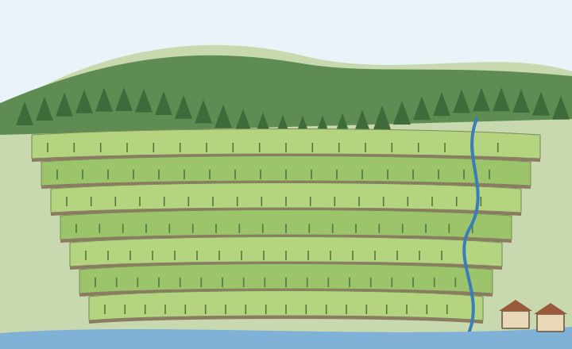

Human-Environmental Interaction
People and the environment shape each other.
Part 1 · Hook
Why this matters
Part 2 · Prerequisite check
Quick check before you start
1. Which describes a place's site?
- Its land, water and climate
- Its links to other places
- Its latitude and longitude
- What people feel about it
Show the answer
Site is the physical character of the spot itself.
- Correct: Its land, water and climate:
- Its links to other places:
- Its latitude and longitude:
- What people feel about it:
2. Which kind of data is an interview with a farmer?
- Qualitative
- Quantitative
- Remote sensing
- A census
Show the answer
Interviews record words and experiences.
- Correct: Qualitative:
- Quantitative:
- Remote sensing:
- A census:
Part 3 · See it
See it first
![Left: environmental determinism, an idea of the late 1800s and early 1900s: an arrow says the physical environment, climate and land, decides how people live and behave. Right: possibilism, the view that replaced it: the physical environment sets limits and offers options, and a two-way arrow says people choose, as culture and technology shape how they use it. A note says determinism was used to claim that people in hot climates could not govern themselves, an argument for colonial rule, and that geographers rejected it.](../figures/human-environment-two-views.svg)
Part 4 · Step by step
How it works, step by step
- The physical environment sets limits, such as steep slopes, dry land or a low coastpeople face choices about how to use the land and its natural resources
- People use culture and technology to adapt or reshape the landland use changes: fields on slopes, land taken from the sea, cities in deserts
- Resources are used faster than they can be replacedthe land, water or fish run down, which is not sustainable
Part 5 · Key ideas
Key ideas
- Natural resources are things from nature that people use. Renewable ones (sunlight, wind, fish, water) can replace themselves; nonrenewable ones (oil, coal) are used up.
- Land use is how people use an area of land: forest, farms, homes, roads, factories.
- Sustainability means using resources so that people now meet their needs without harming the ability of future people to meet theirs.
- Environmental determinism said the environment decides human behavior; it was rejected and was used to justify European rule. Possibilism says the environment sets limits and people choose.
Part 6 · Misconception
A common mistake
The wrong idea: Possibilism means people can do anything, whatever the environment.
What actually happens: Possibilism still says the environment sets limits. People choose among the options it offers, using their culture and technology, and their choices can have costs, as at the Aral Sea.
Part 7 · Check yourself
Check yourself
Exam-style questions. Anything you miss goes into your review queue.
Image
A hillside farmed in steps (a LevlPrep drawing)

1. Which statement describes how people changed this hillside?
- They cut flat steps held by stone walls and led water down a channel
- They left the slope as it was and planted crops in the forest at the top
- They cleared the whole hill of trees and built houses across the slope
- They dug a river at the foot of the hill to drain the fields above
Show the answer
Describe the human changes you can see: flat steps, stone walls and a water channel.
- Correct: They cut flat steps held by stone walls and led water down a channel: Right: the steps, walls and channel are all human changes to a steep slope.
- They left the slope as it was and planted crops in the forest at the top: The forest at the top is left standing; the crops are on the steps below it.
- They cleared the whole hill of trees and built houses across the slope: The forest remains at the top, and the two houses are by the river, not across the hill.
- They dug a river at the foot of the hill to drain the fields above: The river is at the foot of the hill; nothing shows it was dug.
2. Which idea about people and the environment does this scene support best?
- Environmental determinism: the steep land decided that no one could farm here
- Possibilism: the steep land set limits, but people chose a way to farm it
- Environmental determinism: the climate made these people grow crops in steps
- Distance decay: the fields get smaller and smaller farther from the river
Show the answer
Possibilism: the environment offers limits and options, and people choose, using culture and technology.
- Environmental determinism: the steep land decided that no one could farm here: The scene shows the opposite: people farm the steep land.
- Correct: Possibilism: the steep land set limits, but people chose a way to farm it: Right: the slope was a limit, and people chose a way to work with it.
- Environmental determinism: the climate made these people grow crops in steps: Determinism says the environment decides; the steps show a human choice and skill.
- Distance decay: the fields get smaller and smaller farther from the river: The drawing does not show fields shrinking away from the river, and distance decay is about contact falling with distance, not the size of fields.
3. How could the stepped fields help make farming on this hillside sustainable?
- The steps let farmers clear the forest at the top more quickly
- The stone walls keep the river from flooding the two houses at the foot
- The flat steps slow rainwater, so less soil washes down the slope
- The steps make the hill taller, so it gets more sunlight
Show the answer
Sustainability means using land and resources so they last. Steps that keep soil in place let a slope be farmed far into the future.
- The steps let farmers clear the forest at the top more quickly: The forest is left at the top; clearing it would make the slope less stable, not more.
- The stone walls keep the river from flooding the two houses at the foot: The walls are up the hill, holding the steps, not along the river.
- Correct: The flat steps slow rainwater, so less soil washes down the slope: Right: on a bare slope, rain carries soil away; flat steps hold water and soil in place, so the land can be farmed for generations.
- The steps make the hill taller, so it gets more sunlight: Cutting steps does not change the height of the hill.
4. Place the two ideas about people and the environment in the order geographers held them, earlier to later.
How geographers' thinking changed
- Earlier view (late 1800s, early 1900s)
- Later view (from the 1900s on)
Pick a piece, then the place it belongs. Drag works too. Pick a filled place to take its piece back.
Show the answer
Geographers moved from environmental determinism (the environment decides) to possibilism (the environment sets limits, people choose).
- Earlier view (late 1800s, early 1900s): Environmental determinism
- Later view (from the 1900s on): Possibilism
5. Around 1900, some writers claimed that hot climates made people less hardworking, so people from cooler lands should rule them. Which idea is this, and why was it rejected?
- Possibilism; it gave people too much credit for adapting to their surroundings and climate
- Sustainability; it said hot places should save their resources for the future
- Environmental determinism; it was rejected because hot climates were too hard to study
- Determinism; it ignored culture and choice, and it was used to justify European rule
Show the answer
Environmental determinism claimed the physical environment decides human behavior. Geographers rejected it as wrong and as a cover for unequal rule.
- Possibilism; it gave people too much credit for adapting to their surroundings and climate: Possibilism says people choose; this claim says the climate decides.
- Sustainability; it said hot places should save their resources for the future: Nothing in the claim is about using resources so they last.
- Environmental determinism; it was rejected because hot climates were too hard to study: It was rejected because the evidence showed people succeed in every climate, not because the places were hard to study.
- Correct: Determinism; it ignored culture and choice, and it was used to justify European rule: Right: determinism said the environment fixes how people behave. It ignored human choice and was used to defend conquest and rule by European powers.
6. Large parts of the Netherlands are land that people took from the sea and from lakes by building dikes and pumping out the water. Which idea does this support?
- Possibilism
- Environmental determinism
- Distance decay
- Time-space compression
Show the answer
Dutch land reclamation is a classic case of possibilism: the environment limits, people choose.
- Correct: Possibilism: Right: a low, wet coast was a limit, and people chose to reshape it with technology.
- Environmental determinism: Determinism would expect the sea to decide where the Dutch could live.
- Distance decay: Distance decay is about contact falling with distance.
- Time-space compression: Time-space compression is about faster links between places.
Part 8 · Summary
Summary
Part 9 · Up next
What comes next
Part 10 · Connections